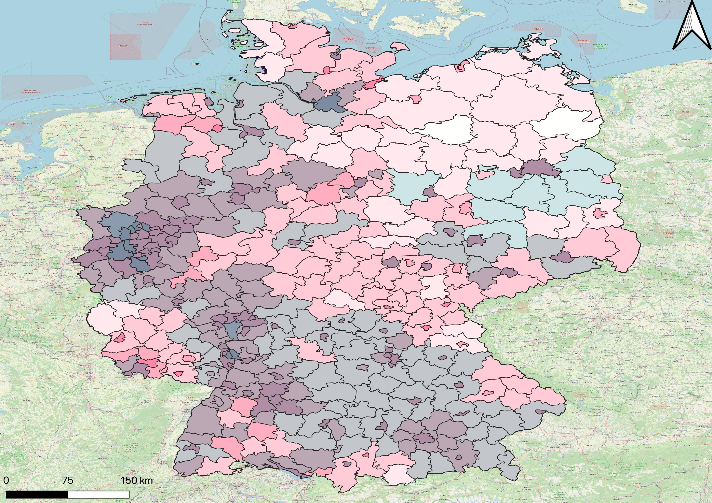

Nitrogen Dioxide (NO₂) Analysis
Overview
Nitrogen dioxide (NO₂) is a major air pollutant primarily emitted from vehicle exhausts, power plants, and industrial facilities. It plays a crucial role in atmospheric chemistry as a precursor to ground-level ozone and secondary particulate matter formation. Our analysis covers the period 2013-2022, examining spatial patterns, temporal trends, and relationships with land cover types across the study area.
Health Impacts
- Respiratory tract irritation and inflammation
- Increased susceptibility to respiratory infections
- Exacerbation of asthma and bronchitis
- Reduced lung function development in children
Major Sources
- Motor vehicle emissions (primary source)
- Power plant and industrial combustion
- Off-road equipment and machinery
- Residential heating systems
Concentration Classifications
NO₂ concentrations are classified according to both EU annual limit values and WHO air quality guidelines to assess compliance and health risks.
| Class | EU Classification (μg/m³) | WHO Classification (μg/m³) | Health Assessment |
|---|---|---|---|
| 1 | ≤ 10 | ≤ 10 | Good - Minimal health risk |
| 2 | 10-25 | 10-20 | Moderate - Acceptable for most people |
| 3 | 25-40 | 20-30 | Unhealthy for sensitive groups |
| 4 | 40-50 | 30-40 | Unhealthy - Exceeds EU limit |
| 5 | > 50 | > 40 | Very unhealthy - Significant health risk |
Temporal Analysis (2013-2022)
Annual Average Trends
The time series analysis reveals significant temporal variations in NO₂ concentrations across the study period. Urban areas consistently show higher concentrations compared to rural regions, with notable decreases during 2020 due to COVID-19 mobility restrictions.
NO₂ Annual Average Time Series Chart
Interactive chart showing yearly trends for different land cover classes
2022 Annual Average Difference
The 2022 Annual Average Difference from the 2017-2021 mean shows spatial patterns of concentration changes. Positive values indicate higher pollution than the 5-year average, while negative values suggest improvement or temporary reductions.
NO₂ AAD Map 2022
Spatial visualization of concentration anomalies
Land Cover Correlation
The relationship between NO₂ concentrations and land cover types reveals important insights into pollution sources and spatial distribution patterns. Urban and industrial areas show consistently higher concentrations compared to natural and agricultural lands.
NO₂ Concentration by Land Cover Class
Bar chart showing min/max concentrations for different IPCC land cover categories (2013-2022)
Key Findings
- Settlement: Highest concentrations (urban emissions)
- Cropland: Moderate levels (agricultural machinery)
- Grassland: Lower concentrations
- Forest: Lowest levels (natural absorption)
- Wetland: Variable depending on location
- Other lands: Site-specific patterns
Population Exposure Assessment
Bivariate Analysis
The bivariate map combines NO₂ concentration levels with population density to identify areas of highest concern. This analysis helps prioritize intervention strategies and assess public health risks.
NO₂ vs Population Bivariate Map
5x5 color matrix showing pollution-population relationships
Exposure Distribution
The pie chart shows the percentage of population exposed to different NO₂ concentration categories, providing insights into public health impacts across the study area.
Population Exposure Pie Chart
Distribution of population across NO₂ concentration classes